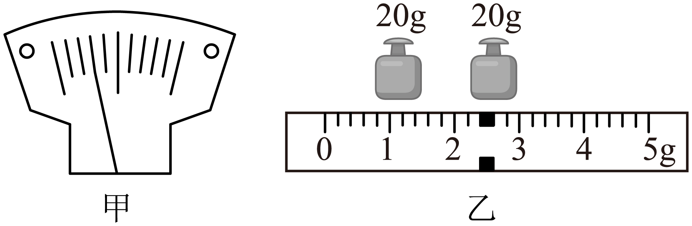
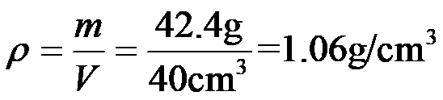

2023年北京中考物理 第21题 解析
21. 小强用天平和量筒测量土豆的密度，由于土豆太大，不能放入量筒中，他将土豆切下来一小块进行实验。

（1）将天平放在水平台面上，游码归零后，发现指针指示的位置如图甲所示，将平衡螺母向______端移动，使横梁水平平衡；
（2）将土豆放在天平的左盘，当右盘中砝码的质量和游码在标尺上的位置如图乙所示时，横梁再次水平平衡，土豆的质量为______g；
（3）用量筒测出土豆的体积为40cm3；
（4）该土豆的密度为______g/cm³。
【答案】 ①. 右 ②. 42.4 ③. 1.06
【解析】
【详解】（1）[1]将天平放在水平台面上，游码归零后，由图甲可知，指针偏向分度盘中线的左侧，应将平衡螺母向右调节，使天平在水平位置平衡。
（2）[2]由图乙可知，砝码的总质量为
20g+20g=40g
标尺的分度值为0.2g，读数为2.4g，则土豆的质量为
40g+2.4g=42.4g
（4）[3]该土豆的密度为
